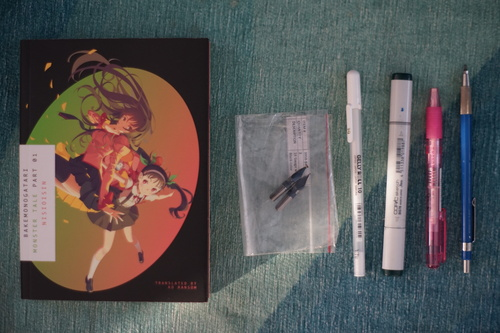

What's that?? A THRIFT HAUL?? WAIT WHAT???
Really!! I haven't done much thrift shopping for a while and the stores I have visited had nothing worth buying. The main feature of my blog is now a rare pepe.

Okay okay, not all of it is used!
They're round! How cute! I got 1 and 2.5 and 2.5 is HUGE.
New. Mine died a couple days ago so I went on a long journey to replace it.
They had a selection of used copic at the store, but this was the only sketch and I knew I didn't already have it.
New. I like it so far. It's really good for detailed erasing.
I love lead holders. I've been looking to buy another.
I ordered some new wigs for my newest dolls~ Please check them out!


And here's a link to the box opening, just in case! Pafa looks gorgeous in most of these wigs so you should check it out.
I wanted to buy Hagi some 20mm Volks HG tea rose eyes, and I found a pair on eBay! The seller canceled my order the next day... Hagi will have to remain in her kuroneko eyes a little longer ;_;
Hagi is really the cutest!! How can a face be so sweet?? I'll make her even cuter though, just you watch~